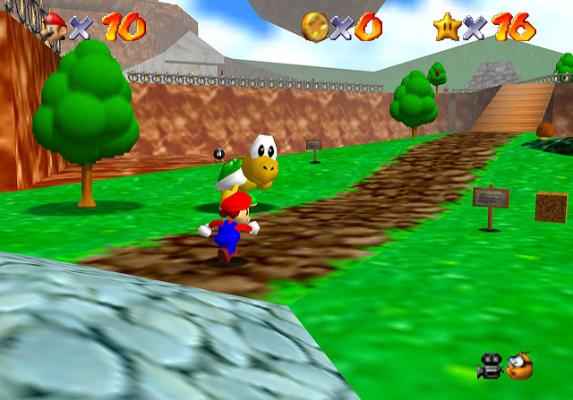
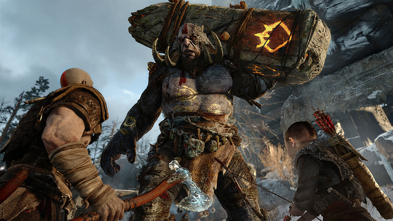

There are many great things about video games, and graphics are definitely up there on the greatness scale.
The graphical fidelity of a game can enhance the experience and draw a player in to the point where they might not be able to
tell the difference between the game and real life. Not all games go for a realistic visual style though, and I honestly prefer
games that go for more stylistic graphics that stray away from realism.
In my opinion, video games should not try to emulate real life too much. While there are certain aspects of real life that
make sense to include in a game in order to leave the player understanding of the game, I never want a game to completely simulate
real life. I find that games have so much more to offer in the visual department that simply choosing a realistic stlye of graphics is almost
taking the easy way out at this point.
Now that my silly rant is over, let's get into games as an artform. Video games started out with very simple 2D visuals that consisted of
a small amount of pixels lined up in different patters in order to create shapes and objects. These early pixel games were considered "8-bit" and were
only able to make use of 256 colors. Some old games utilizing these 8-bit graphics are Super Mario Bros. by Nintendo, Mega Man by Capcom,
and Castlevania by Konami.
8bit Graphic from Space Invaders
Further yet, games eventually hit the "16-bit" era which allowed developers to use even more pixels than before and
effectively led to developers having less limitations on what they were able to depict with graphics in their games.

Super Mario 64 Primitive 3D Graphics
Eventually 3D graphics were introduced to gaming and the medium was changed forever. Not only did games now have a whole new dimension for gamers to play around in, but the graphical capabilities
were improved by a whole generation. The early 3D games were pretty rough around the edges but as developers learned how to create better 3D graphics, games quickly
evolved from a simple 2D graphical artform into a full 3D, and later still, HD artform. Video games were no longer only fun to play, but could genuinely look
stunningly beautiful.

Amazing Graphics from God of War (PS4)
While games today are still made up of pixels at the end of the day, there are many more complicated processes that create powerful imagery such as
3D polygonal modeling. The graphically demanding games of today consist of thousands of pixels. Graphics are nice and all, but what really gets me interested in a game's visuals has to be a unique
and stylistic art style. One of the most stylistically impressive games I've seen is Persona 5 by Atlus. That game simply oozes style from the menus to the characters
and everything inbetween.